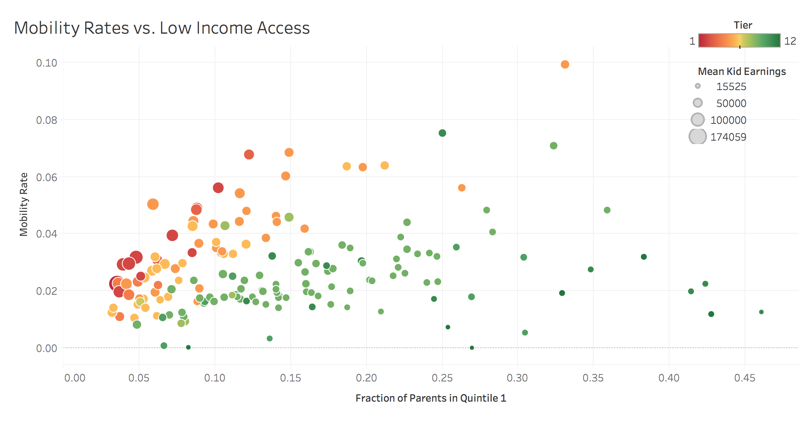

Bubble Chart
Mobility Rates vs. Low Income Access
Bubble Chart comparing:
- Fraction of Parents in Quintile 1 (lowest quintile)
- Mobility Rate
- Tier
- Mean Kid Earnings
- Color encoding shows the tier of college, with higher tier (1) colleges in red and lower tier (12) colleges in green
- The bubble size indicates the mean kid earnings, with larger sizes indicating higher earnings
- The data is filtered on State, only looking at colleges in CA
This visualization seeks to support one of the main results documented by the original study:
Rates of upward mobility – the fraction of students who come from families in the bottom income quintile and reach the top quintile – differ substantially across colleges because low-income access varies significantly across colleges with similar earnings outcomes. Rates of bottom-to-top quintile mobility are highest at certain mid-tier public universities, such as the City University of New York and California State colleges.
This visualization allows us to see that many of the colleges that have the highest mobility rate are near the middle tier, rather than the highest or lowest tiers. We can also see that many of the colleges have similar child earning outcomes despite having varying rates of students with parents in the lowest quintile.
Code Example used to build this visualization: Mobility Rate by College Bubble ChartD3 Visualization
Chaitrika Budamagunta
Dataset: “Baseline Cross-Sectional Estimates of Child and Parent Income Distributions by College”
from the Mobility Report Cards: The Role of Colleges in Intergenerational Mobility project
from Opportunity Insights.
Prototype

Chaitrika Budamagunta
Dataset: “Baseline Cross-Sectional Estimates of Child and Parent Income Distributions by College”
from the Mobility Report Cards: The Role of Colleges in Intergenerational Mobility project
from Opportunity Insights.